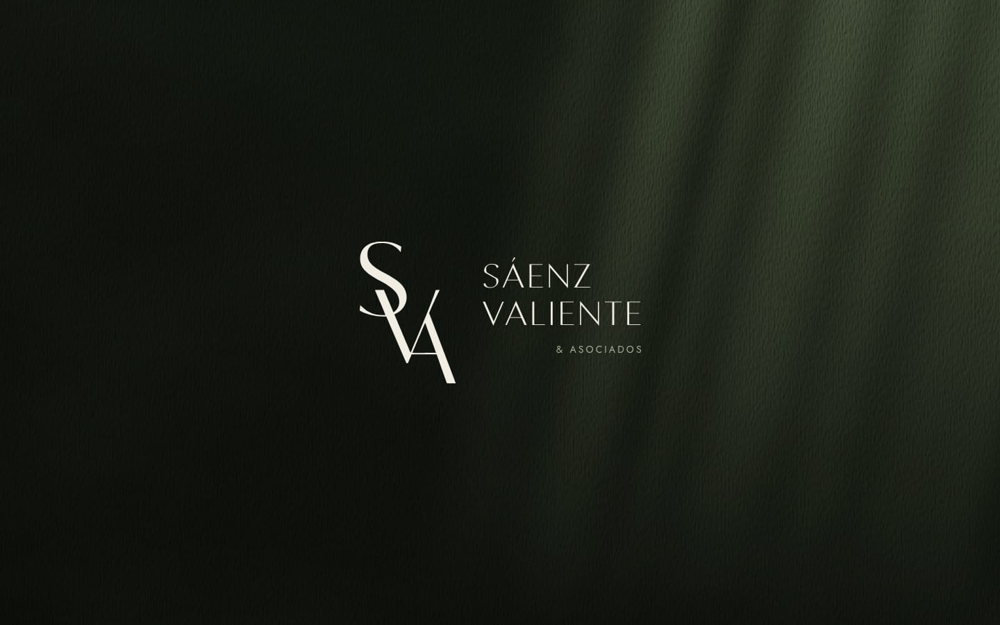
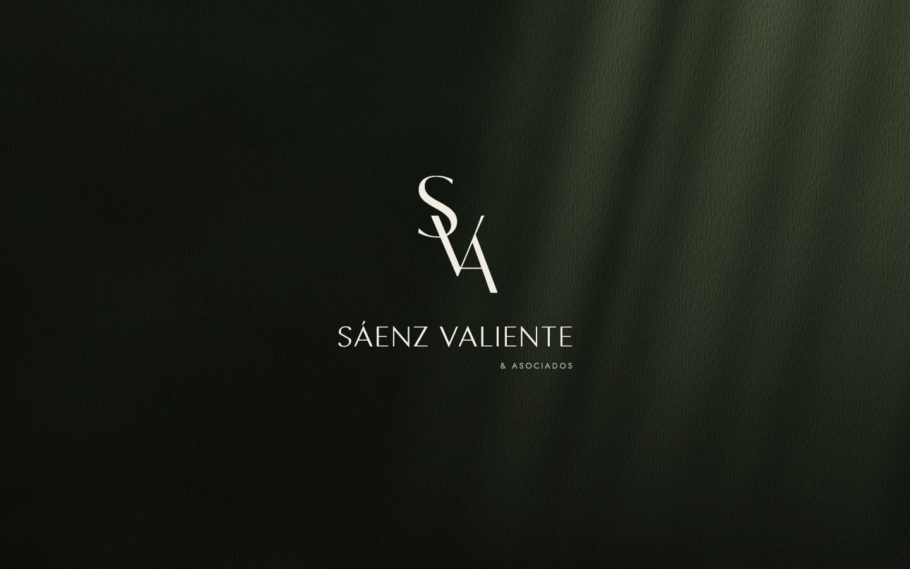
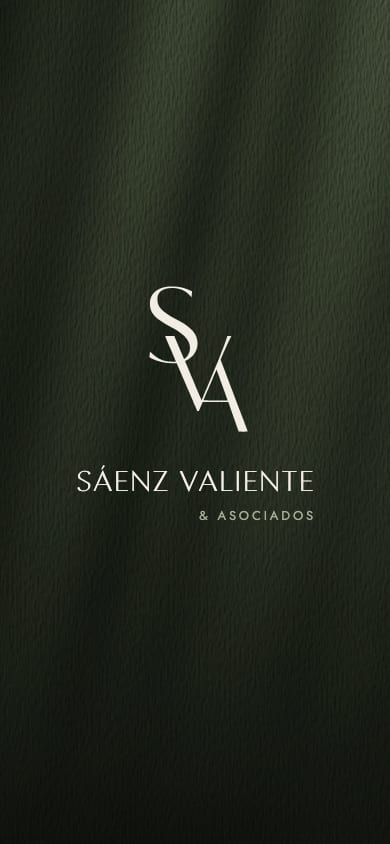
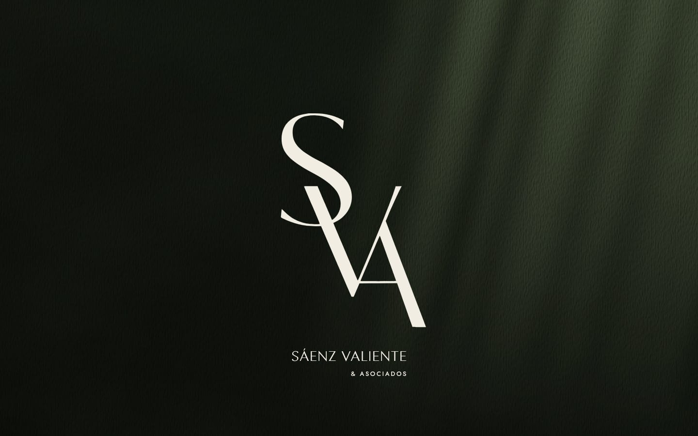
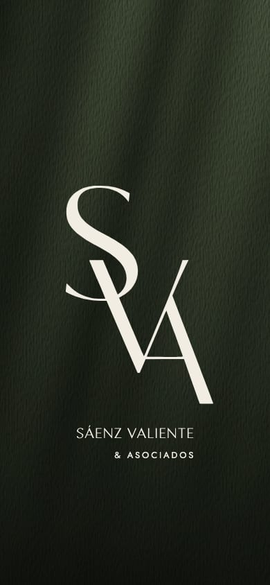
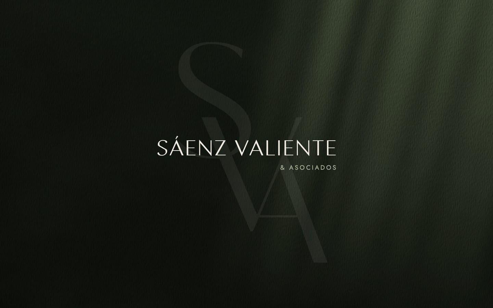
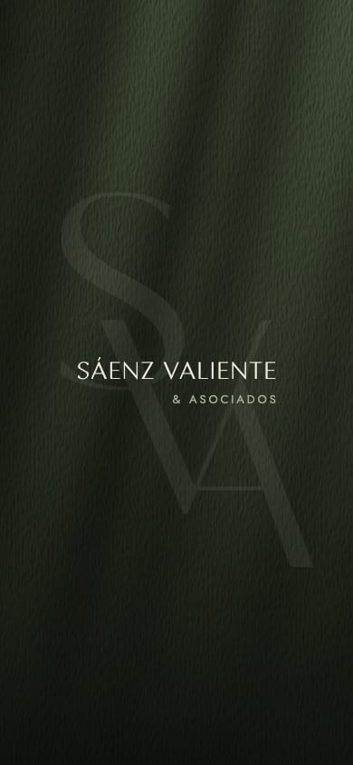
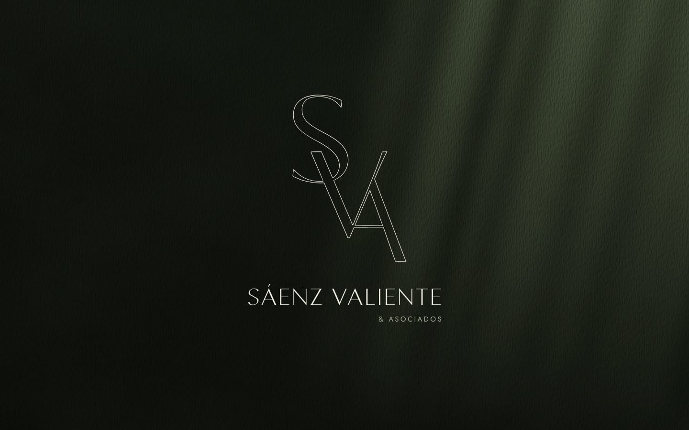
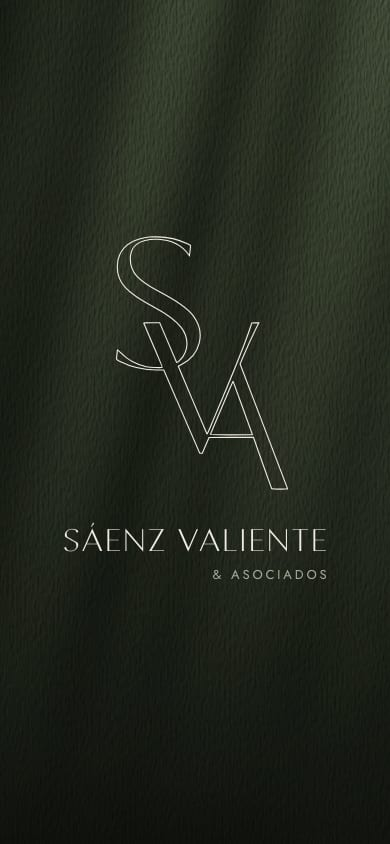
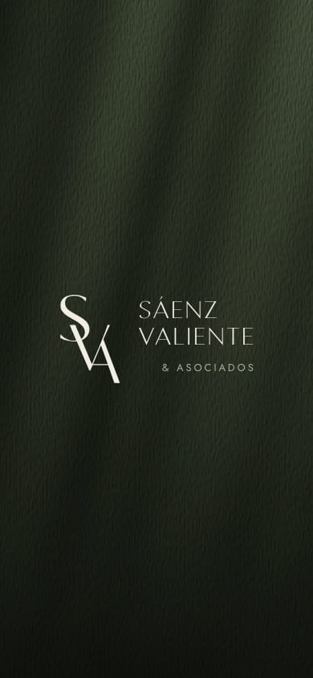

Sáenz Valiente & Asociados
Cinco propuestas · octubre de 2026
Las cinco conservan el monograma del Estudio tal como es: el mismo trazado, solo en distinto tamaño, sin redibujarlo ni deformarlo. Todas se apoyan en la luz verde de la portada actual y en la tipografía del sitio, y se muestran en computadora y en teléfono.
Proponemos la opción E. Las demás quedan a su consideración.

El monograma sobre el nombre, centrados como un solo sello, al modo en que el Estudio compone su marca.


El monograma, grande, como la imagen de la portada; el nombre, pequeño, debajo, como un epígrafe.


El nombre centrado, como hoy, y detrás el monograma muy grande y muy tenue, como una marca de agua. El nombre sigue siendo lo primero que se lee.


El contorno exacto del monograma como una sola línea fina, con el nombre debajo.


El monograma a la izquierda y el nombre en dos líneas a su derecha, como en el logotipo del Estudio.

Indíquennos la letra de la opción que prefieran. También pueden combinar ideas de distintas opciones, por ejemplo el tamaño del monograma de una con la disposición de otra.
Proponemos la opción E porque reúne el monograma y el nombre como en el logotipo del Estudio, centrados y en calma, sin que uno compita con el otro.
Cualquier ajuste se prueba en computadora y en teléfono antes de publicarse.